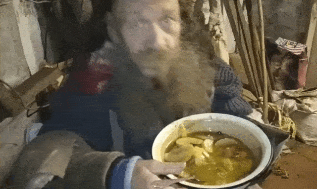

Яблоки у курином бульоне 🤤

Ингредлиенты
- яблоки
- куриця
- апельсин
- перчик (горошек)
шаги пригтовление
- свари бульён из курятина
- покроши туда ошметки курятина
- нарежь туда яблоки и апельсин и еще каких то фурктов
- соль и специи по вкусу
- вари на протяжение 5 минут
Ну от и всё. яблоки у курином бульоне готов. Моё лицо:
